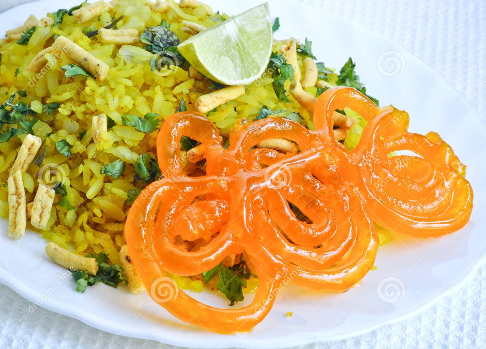

This is a very popular breakfast dish among the citizens of Indore. While you might wonder how the sweetness of jalebi and the saltiness of poha will be together, the truth is, it’s a wonderful combination! Farsan or namkeen sev is also sprinkled on the poha, to add a crunchy texture to the soft grains. Biting into a juicy jalebi in the midst of eating poha, will provide your tastebuds with a truly delightful experience.
Cost For Two: Rs 30(approx.)
One can find tasty poha in every corner of street, particularly in 56 dukaan, sarafa, apna sweets, sharma namkeen etc.